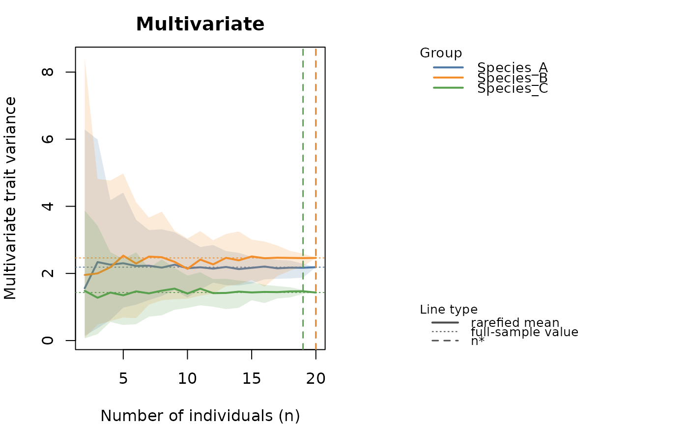

Rarefaction of intraspecific trait variability against sample size
Source:R/itv_accumulation.R
itv_accumulation.RdBuilds, for each group (typically a species), a rarefaction/accumulation
curve of an intraspecific variability metric as a function of the number
of individuals sampled, and estimates the sample size n* at which that
variability stabilises – the trait-based analogue of a species
accumulation (rarefaction) curve. For each sub-sample size
n = 2, 3, ..., N_g, n_perm sub-samples of n individuals are
drawn at random without replacement from the group's N_g
individuals, the metric is computed on each, and the draws are summarised
by their mean and a resampling quantile band.
Usage
itv_accumulation(
x,
groups = NULL,
metric = c("variance", "sd", "cv", "range"),
n_perm = 99,
sizes = NULL,
conv_tol = 0.05,
asymptote_prop = 0.95,
model = c("michaelis", "exponential"),
probs = c(0.025, 0.975),
min_n = 5,
log_transform = FALSE,
scale = NULL,
seed = NULL
)
# S3 method for class 'intrait_itv_accumulation'
print(x, ...)Arguments
- x
An object of class
"intrait_itv_accumulation".- groups
Factor or character vector, one value per row of
x: the grouping variable (typically species). Required whenxis a raw trait table; taken fromx$groupswhenxis an"intrait_traitspace". Rows with a missing group are dropped with a message.- metric
Character, the variability metric to rarefy. One of
"variance"(default; multivariate trait variance / trace of the covariance – dispersion),"sd"(per-trait standard deviation – dispersion),"cv"(per-trait coefficient of variation in percent – dispersion) or"range"(per-trait observed range – accumulation).- n_perm
Integer, number of random sub-samples drawn at each sub-sample size. Defaults to
99.- sizes
Optional integer vector of sub-sample sizes to evaluate. If
NULL(default), every size from2to each group's own N_g is used; if supplied, it is intersected per group with2:N_g.- conv_tol
Numeric in (0, 1), the precision tolerance defining convergence for dispersion metrics:
n*is the smallestnbeyond which the resampling band's half-width(upper - lower) / 2, relative to|V(N_g)|, stays at or belowconv_tolfor all larger sizes. With the defaultprobs = c(0.025, 0.975)band this is a 95% resampling interval, soconv_tol = 0.05means "estimate pinned down to within +/-5% of the full-sample value". Defaults to0.05.- asymptote_prop
Numeric in (0, 1), the fraction of the fitted asymptote Vmax defining
n*for accumulation metrics. Defaults to0.95.- model
Character, the saturating model fitted for accumulation metrics:
"michaelis"(default, Michaelis-Menten) or"exponential"(negative exponential). Ignored for dispersion metrics.- probs
Numeric length-2 vector of lower/upper probabilities for the resampling quantile band. Defaults to
c(0.025, 0.975).- min_n
Integer, the minimum group size N_g required for a group to be rarefied; smaller groups are skipped with a message. Defaults to
5.- log_transform
Logical, apply a
log10(x + 1)transformation to a raw trait table before computing the metric (as intrait_space()). Ignored whenxis an"intrait_traitspace". Defaults toFALSE.- scale
Logical or
NULL. Standardise each trait (z-score) before computing the metric, so traits with different units contribute comparably to the multivariate"variance".NULL(default) resolves toTRUEformetric = "variance"andFALSEotherwise; it is always forced toFALSEformetric = "cv"(centring would make a CV meaningless). Ignored whenxis an"intrait_traitspace"(already pre-processed).- seed
Optional integer passed to
set.seed()for reproducibility under a sequential plan (see Details). Defaults toNULL.- ...
Currently unused.
Value
An object of class "intrait_itv_accumulation", a list with
elements:
- curve
a tidy
data.framewith columnsgroup,trait(the trait name, or"multivariate"formetric = "variance"),n,mean,lower,upper(the resampling mean and quantile band at each sub-sample size).- summary
a
data.frame, one row per (group,trait) series, with columnsgroup,trait,metric,framing("convergence"or"accumulation"),n_max(N_g),v_full(the full-sample metric value),asymptoteandprop_reachedandk(accumulation only;NAfor convergence –kis the fitted half-saturationKformodel = "michaelis"or the ratebformodel = "exponential", used to redraw and extrapolate the fitted curve), andn_star(the estimated stabilisation sample size).- metric, framing, model, conv_tol, asymptote_prop, n_perm, probs
the settings used.
Has dedicated print() and plot() methods.
Invisibly returns x.
Details
The behaviour of the curve, and therefore the meaning of "stabilises", depends fundamentally on the kind of metric (see also Violle et al., 2012; Gotelli & Colwell, 2001):
- Dispersion metrics (
"variance","sd","cv") The sample variance is an unbiased estimator of the population variance:
E[s^2(n)] = sigma^2for everyn >= 2. The expected curve is therefore essentially flat; what changes withnis not its level but its precision – the resampling band narrows asngrows. "Stabilisation" here is therefore convergence of the estimate in precision, not in level:n*is defined as the smallestnbeyond which the resampling band's half-width, relative to the full-sample valueV(N_g), stays at or belowconv_tolfor all larger sub-sample sizes (framing"convergence"). Basing this on the band rather than the mean is deliberate: becauseE[s^2(n)]is flat, a criterion on the mean would returnn* = 2trivially, whereas the band width is what actually decreases with sampling effort. This answers: how many individuals are needed for a reliable (well-pinned-down) estimate of intraspecific variability?- Accumulation metrics (
"range") The observed range (and, more generally, the amount of trait space occupied) genuinely increases with
nand saturates, exactly like species richness in a rarefaction curve. Here a saturating model is fitted to the curve (Michaelis-MentenV(n) = Vmax * n / (K + n)or negative exponentialV(n) = Vmax * (1 - exp(-b*n))) andn*is the sample size reaching a fractionasymptote_propof the estimated asymptoteVmax(framing"accumulation"). For Michaelis-Menten this is available in closed form,n* = K * p / (1 - p); for the exponential model,n* = -log(1 - p) / b. When the metric has not saturated within the observed range (e.g. the range of an unbounded, approximately Gaussian trait, which grows without a true asymptote),n*may exceedn_max– this is a legitimate extrapolation signalling that more individuals than were sampled would be needed to reachasymptote_propof the fitted asymptote, and should be read alongsideprop_reached(the fraction of the asymptote actually attained at N_g).
"variance" is multivariate: it uses the trace of the group trait
covariance matrix (the sum of the per-trait variances), the same
dispersion measure returned by trait_disparity(), so a single curve is
produced per group. "sd", "cv" and "range" are univariate and
produce one curve per group and trait.
The n_perm random draws at each sub-sample size are independent of one
another and are distributed automatically across future.apply's workers
when that (Suggested) package is installed and a parallel
future::plan() has been set beforehand; otherwise this runs
sequentially, with identical results (see bootstrap_functional_space(),
trait_disparity()). Exact reproducibility across runs therefore
requires either a sequential plan together with seed, or reliance on
future.apply's own parallel-safe streams.
References
Gotelli, N. J., & Colwell, R. K. (2001). Quantifying biodiversity: procedures and pitfalls in the measurement and comparison of species richness. Ecology Letters, 4(4), 379-391.
Violle, C., Enquist, B. J., McGill, B. J., Jiang, L., Albert, C. H., Hulshof, C., Jung, V., & Messier, J. (2012). The return of the variance: intraspecific variability in community ecology. Trends in Ecology & Evolution, 27(4), 244-252.
Examples
fish <- simulate_fishmorph_points(n_per_species = 20, n_replicates = 1)
ratios <- fishmorph_ratios(fishmorph_segments(fish))
# multivariate trait variance: how many individuals until the
# intraspecific-variability estimate converges (resampling band within
# +/-5% of the full-sample value)?
acc <- itv_accumulation(
ratios[, c("BEl", "VEp", "REs")],
groups = fish$metadata$species, n_perm = 30, seed = 1
)
acc
#> <intrait_itv_accumulation>
#> metric = variance (convergence), 30 permutation(s) per sub-sample size
#> n* = smallest n staying within 5% of the full-sample value
#>
#> -- Stabilisation sample size per group/trait --
#> group trait metric framing n_max v_full n_star
#> Species_A multivariate variance convergence 20 2.1867 20
#> Species_B multivariate variance convergence 20 2.4622 20
#> Species_C multivariate variance convergence 20 1.4311 19
plot(acc)

# per-trait range: a genuinely saturating accumulation curve, with n*
# taken at 95% of a fitted Michaelis-Menten asymptote
acc_range <- itv_accumulation(
ratios[, c("BEl", "VEp")], groups = fish$metadata$species,
metric = "range", n_perm = 30, seed = 1
)
acc_range
#> <intrait_itv_accumulation>
#> metric = range (accumulation), 30 permutation(s) per sub-sample size
#> n* = n reaching 95% of the fitted michaelis asymptote
#>
#> -- Stabilisation sample size per group/trait --
#> group trait metric framing n_max v_full asymptote prop_reached n_star
#> Species_A BEl range accumulation 20 0.4726 0.5871 0.8049 83
#> Species_A VEp range accumulation 20 0.1496 0.1841 0.8125 94
#> Species_B BEl range accumulation 20 0.4213 0.5385 0.7824 105
#> Species_B VEp range accumulation 20 0.1568 0.2474 0.6337 223
#> Species_C BEl range accumulation 20 0.1951 0.2352 0.8295 75
#> Species_C VEp range accumulation 20 0.0756 0.0929 0.8140 73
#> k
#> 4.3541
#> 4.9303
#> 5.5056
#> 11.7302
#> 3.9030
#> 3.8328